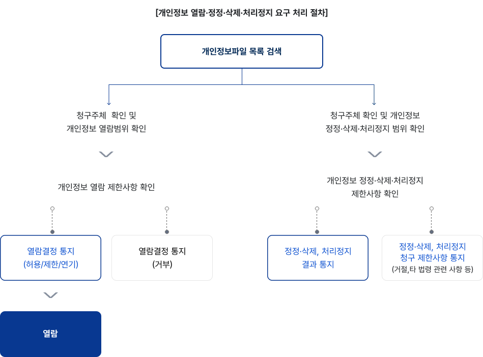

- ① 충청남도교육청은 다음의 목적을 위하여 개인정보를 수집하여 처리합니다. 처리하고 있는 개인정보는 다음 목적 이외의 용도로는 이용되지 않으며, 이용 목적이 변경되는 경우에는 개인정보 보호법 제18조에 따라 별도의 동의를 받는 등 필요한 조치를 이행할 예정입니다.
- ② 충청남도교육청이 개인정보 보호법 제32조에 따라 등록, 공개하는 개인정보파일은 개인정보보호위원회 개인정보포털(www.privacy.go.kr)→개인서비스→개인정보 열람등요구→「개인정보파일 목록 검색」메뉴를 통해 공개하고 있습니다.(기관명에'충청남도교육청'을 입력하면 조회 가능)
개인정보 처리방침
충청남도교육청은 개인정보 보호법 제30조(개인정보 처리방침의 수립 및 공개)에 따라 정보주체의 개인정보 보호 및 권익을 보호하고 개인정보와 관련한 고충을 원활하게 처리할 수 있도록 다음과 같이 개인정보 처리방침을 수립·공개하고 있으며 개인정보 처리방침을 개정하는 경우 누리집을 통하여 공지할 예정입니다.
이 방침은 별도의 설명이 없는 한 충청남도교육청에서 처리하는 모든 개인정보파일에 적용됩니다. 다만, 소관업무 처리를 위해 충청남도교육청 각 부서에서 별도의 개인정보 처리방침을 제정⋅시행하는 경우에는 그에 따르고, 해당부서가 운영하는 누리집에 게시함을 알려드립니다.
주요 개인정보 처리 표시(라벨링)
일반 개인정보 수집
※ 세부항목은 개인정보 처리방침 본문 확인
개인정보의 처리 목적
※ 세부항목은 개인정보 처리방침 본문 확인
개인정보의 보유기간
※ 세부항목은 개인정보 처리방침 본문 확인
개인정보의 제공
※ 세부항목은 개인정보 처리방침 본문 확인
처리위탁
※ 세부항목은 개인정보 처리방침 본문 확인
고충처리부서
목차
제1조(개인정보의 처리 목적, 항목, 개인정보의 처리 및 보유기간)
제2조(14세 미만 아동의 개인정보 처리)
- ① 충청남도교육청은 14세 미만 아동의 개인정보를 처리하기 위하여 동의가 필요한 경우에는 해당 아동의 법정대리인으로부터 동의를 받습니다.
- ② 충청남도교육청은 14세 미만 아동의 개인정보를 수집할 때에는 아동에게 법정대리인의 성명, 연락처와 같이 최소한의 정보를 요구할 수 있으며, 다음 중 하나의 방법으로 적법한 법정대리인이 동의하였는지를 확인합니다.
- 1. 동의 내용을 게재한 인터넷 사이트에 법정대리인이 동의 여부를 표시하도록 하고 개인정보처리자가 그 동의의 표시를 확인했음을 법정대리인의 휴대전화 문자메시지로 알리는 방법
- 2. 동의 내용을 게재한 인터넷 사이트에 법정대리인이 동의 여부를 표시하도록 하고 법정대리인의 신용카드·직불카드 등의 카드정보를 제공받는 방법
- 3. 동의 내용이 적힌 서면을 법정대리인에게 직접 발급하거나 우편 또는 팩스를 통하여 전달하고, 법정대리인이 동의 내용에 대하여 서명날인 후 제출하도록 하는 방법
- 4. 동의 내용이 적힌 전자우편을 발송하고 법정대리인으로부터 동의의 의사표시가 적힌 전자우편을 전송받는 방법
- 5. 전화를 통하여 동의 내용을 법정대리인에게 알리고 동의를 받거나 인터넷주소 등 동의 내용을 확인할 수 있는 방법을 안내하고 재차 전화 통화를 통하여 동의를 받는 방법
- 6. 그 밖에 위 항의 규정에 준하는 방법으로서 법정대리인에게 동의 내용을 알리고 동의의 의사표시를 확인하는 방법
제3조(개인정보의 제3자 제공)
- ① 충청남도교육청은 원칙적으로 정보주체의 개인정보를 개인정보 수집·이용 목적으로 명시한 범위를 초과하여 제3자에게 제공하지 않습니다. 다만, 정보주체의 동의, 법률의 특별한 규정 등 개인정보 보호법 제17조 및 제18조에 해당하는 경우에만 개인정보를 제3자에게 제공합니다.
- ② 충청남도교육청은 제3자에게 제공하는 개인정보 제공 현황은 「개인정보 제3자 제공현황」 게시판에 개제하여 정보주체가 확인할 수 있도록 안내하고 있습니다.
제4조(개인정보의 추가적인 이용·제공의 기준)
충청남도교육청은 개인정보 보호법 제15조제3항 또는 제17조제4항에 따라 정보주체의 동의 없이 개인정보를 이용 또는 제공할 수 있습니다. 정보주체의 동의 없이 추가적인 이용 또는 제공을 할 경우 판단 기준은 다음과 같습니다.
- 1. 당초 수집 목적과 관련성이 있는지 여부
- 2. 개인정보를 수집한 정황 또는 처리 관행에 비추어 볼 때 개인정보의 추가적인 이용 또는 제공에 대한 예측 가능성이 있는지 여부
- 3. 정보주체의 이익을 부당하게 침해하는지 여부
- 4. 가명처리 또는 암호화 등 안전성 확보에 필요한 조치를 하였는지 여부
제5조(개인정보처리 위탁)
- ① 충청남도교육청은 원활한 개인정보 업무처리를 위하여 제3자에게 개인정보 처리 업무를 위탁하고 있으며, 개인정보처리 위탁 현황은 「개인정보처리 위탁 현황」게시판에 게재하여 정보주체가 확인할 수 있도록 안내하고 있습니다.
- ② 충청남도교육청은 위탁계약 체결 시 ｢개인정보 보호법｣ 제26조에 따라 위탁업무 수행목적 외 개인정보 처리금지, 기술적․관리적 보호조치, 재위탁 제한, 수탁자에 대한 관리․감독, 손해배상 등 책임에 관한 사항을 계약서 등 문서에 명시하고, 수탁자가 개인정보를 안전하게 처리하는지를 감독하고 있습니다.
- ③ 위탁업무의 내용이나 수탁자가 변경될 경우에는 지체없이 본 개인정보 처리방침을 통하여 공개하도록 하겠습니다.
제6조(정보주체의 권리·의무 및 그 행사방법)
- ① 정보주체는 충청남도교육청에 대해 언제든지 개인정보 열람·정정·삭제·처리정지 및 철회 요구, 자동화된 결정에 대한 거부 또는 설명 요구 등의 권리를 행사할 수 있습니다.
- ② 권리행사는 정보주체의 법정대리인이나 위임을 받은 자 등 대리인을 통하여 하실 수도 있습니다. 이 경우 개인정보 처리 방법에 관한 고시 별지 제11호서식에 따른 위임장을 제출하셔야 합니다.
※ 14세 미만 아동에 관한 개인정보의 열람등 요구는 법정대리인이 직접 해야 하며, 14세이상의 미성년자인 정보주체는 정보주체의 개인정보에 관하여 미성년자 본인이 권리를 행사하거나 법정대리인을 통하여 권리를 행사할 수도 있습니다. - ③ 권리행사는 충청남도교육청에 대해 개인정보 보호법 시행령 제41조 제1항에 따라 서면, 전자우편, 모사전송(FAX)등을 통하여 하실 수 있으며, 충청남도교육청은 이에 대해 지체없이 조치하겠습니다.

- 1. 개인정보 열람 요구
충청남도교육청에서 보유하고 있는 개인정보파일은 개인정보 보호법 제35조(개인정보의 열람)에 따라 자신의 개인정보에 대한 열람을 요구할 수 있습니다. 다만, 개인정보 열람요구는 법 제35조제4항에 의하여 다음과 같이 제한될 수 있습니다.- 가. 법률에 따라 열람이 금지되거나 제한되는 경우
- 나. 다른 사람의 생명·신체를 해할 우려가 있거나 다른 사람의 재산과 그 밖의 이익을 부당하게 침해할 우려가 있는 경우
- 다. 공공기관이 다음 각 목의 어느 하나에 해당하는 업무를 수행할 때 중대한 지장을 초래 하는 경우
- 1) 조세의 부과·징수 또는 환급에 관한 업무
- 2) 「초·중등교육법」및「고등교육법」에 따른 각급 학교,「평생교육법」에 따른 평생교육시설, 그 밖의 다른 법률에 따라 설치 된 고등교육기관에서의 성적 평가 또는 입학자 선발에 관한 업무
- 3) 학력·기능 및 채용에 관한 시험, 자격 심사에 관한 업무
- 4) 보상금·급부금 산정 등에 대하여 진행 중인 평가 또는 판단에 관한 업무
- 5) 다른 법률에 따라 진행 중인 감사 및 조사에 관한 업무
- 2. 개인정보 정정·삭제 요구
충청남도교육청에서 보유하고 있는 개인정보파일은 개인정보 보호법 제36조(개인정보의 정정·삭제)에 따라 정정·삭제를 요구할 수 있습니다. 다만, 다른 법령에서 그 개인정보가 수집 대상으로 명시되어 있는 경우에는 그 삭제를 요구할 수 없습니다. - 3. 개인정보 처리정지 요구
충청남도교육청에서 보유하고 있는 개인정보파일은 개인정보 보호법 제37조(개인정보의 처리정지 등)에 따라 처리정지를 요구할 수 있습니다. 다만, 개인정보 처리정지 요구 시 법 제37조제2항에 의하여 처리정지 요구가 거절될 수 있습니다.- 가. 법률에 특별한 규정이 있거나 법령상 의무를 준수하기 위하여 불가피한 경우
- 나. 다른 사람의 생명·신체를 해할 우려가 있거나 다른 사람의 재산과 그 밖의 이익을 부당하게 침해할 우려가 있는 경우
- 다. 공공기관이 개인정보를 처리하지 아니하면 다른 법률에서 정하는 소관 업무를 수행할 수 없는 경우
- 라. 개인정보를 처리하지 아니하면 정보주체와 약정한 서비스를 제공하지 못하는 등 계약의 이행이 곤란한 경우로서 정보주체가 그 계약의 해지 의사를 명확하게 밝히지 아니한 경우
- 4. 정보주체의 권리행사 요구 거절 시 불복을 위한 이의제기 절차
충청남도교육청은 개인정보 보호법 제38조(권리행사의 방법 및 절차)에 따라 열람 등 요구에 대한 거절 등 조치에 대하여 불복이 있는 경우 이의를 제기할 수 있도록 필요한 절차를 다음과 같이 안내합니다.- 가. 개인정보 보호책임자는 열람 등 요구에 대한 연기 또는 거절 시, 요구를 받은 날로부터 10일 이내에 연기 또는 거절의 정당한 사유 및 이의제기 방법 등을 통지합니다.
- 나. 정보주체는 열람 등 요구에 대한 거절 등 조치에 대하여 불복이 있는 경우 요구 결정 이의신청서 서식으로 이의신청할 수 있습니다.
제7조(개인정보 열람청구)
- ① 정보주체는 개인정보 보호법 제35조에 따른 개인정보의 열람청구를 아래의 부서를 통해 할 수 있으며, 충청남도교육청은 정보주체의 개인정보 열람청구가 신속하게 처리되도록 노력하겠습니다.
개인정보 열람 등 청구 접수·처리 부서, 연락처 정보를 제공합니다. 개인정보 열람 등 청구 접수·처리 부서 연락처 재무과 전산팀(정보보호센터) - 041-640-8252(전화)
- 041-631-8638(팩스)
- privacy@cne.go.kr(이메일)
- ② 정보주체는 열람청구 담당부서 이외에, 개인정보 포털(www.privacy.go.kr)를 통하여서도 개인정보 열람청구를 하실 수 있습니다.
▶개인정보보호위원회 개인정보 포털 → 개인서비스 → 정보주체 권리행사 → 개인정보 열람등요구(본인인증 필요)
제8조(개인정보의 파기)
- ① 충청남도교육청은 원칙적으로 개인정보 처리목적이 달성된 경우에는 지체없이 해당 개인정보를 파기합니다.
- ② 정보주체로부터 동의받은 개인정보 보유기간이 경과하거나 처리목적이 달성되었음에도 불구하고 다른 법령에 따라 개인정보를 계속 보존하여야 하는 경우에는, 해당 개인정보를 별도의 데이터베이스로 옮기거나 보관 장소를 달리하여 보존합니다.
- ③ 개인정보 파기의 절차 및 방법은 다음과 같습니다.
- 1. 파기절차
충청남도교육청은 파기 사유가 발생한 개인정보(파일)을 선정하고, 개인정보는 개인정보 분야별 책임자, 개인정보파일은 개인정보보호책임자의 승인을 받아 파기합니다. - 2. 파기방법
충청남도교육청은 종이에 출력된 개인정보는 분쇄기로 분쇄하거나 소각을 통하여 파기하며, 전자적 파일 형태의 정보는 기록을 재생할 수 없는 기술적 방법을 사용합니다.
- 1. 파기절차
제9조(개인정보의 안전성 확보 조치)
충청남도교육청은 개인정보 보호법 제29조, 동법 시행령 제30조에 따라 다음과 같이 안전성 확보에 필요한 기술적, 관리적 및 물리적 조치를 하고 있습니다.
- 1. 개인정보 취급 직원의 최소화 및 교육
개인정보를 취급하는 직원을 지정하고 담당자에 한정시켜 최소화 하여 개인정보를 관리하는 대책을 시행하고 있습니다. - 2. 내부 관리계획의 수립 및 시행
개인정보의 안전한 처리를 위하여 내부 관리계획을 수립하고 시행하고 있습니다. - 3. 개인정보의 암호화
이용자의 개인정보는 암호화 되어 저장 및 관리되고 있습니다. 중요한 데이터는 저장 및 전송시 암호화 하여 사용하는 등의 별도 보안기능을 사용하고 있습니다. - 4. 해킹 등에 대비한 기술적 대책
해킹이나 컴퓨터 바이러스 등에 의한 개인정보 유출 및 훼손을 막기 위하여 보안프로그램을 설치하고 주기적인 점검을 하며 외부로부터 접근이 통제된 구역에 시스템을 설치하고 기술적, 물리적으로 감시 및 차단하고 있습니다. - 5. 개인정보처리시스템 접근 제한
개인정보를 처리하는 데이터베이스시스템에 대한 접근권한의 부여, 변경, 말소를 통하여 개인정보에 대한 접근통제 조치를 하고 있으며 침입차단시스템을 이용하여 외부로부터의 무단 접근을 통제하고 있습니다. - 6. 접속기록의 보관
개인정보처리시스템에 접속한 기록(웹로그, 요약정보 등)을 최소 1년 이상 보관, 관리하고 있습니다. - 7. 문서보안을 위한 잠금장치 사용
개인정보가 포함된 서류, 보조저장매체 등을 잠금장치가 있는 안전한 장소에 보관하고 있습니다. - 8. 비인가자에 대한 출입 통제
개인정보를 보관하고 있는 물리적 보관 장소를 별도로 두고 이에 대해 출입통제 절차를 수립, 운영하고 있습니다.
제10조(개인정보 자동 수집 장치의 설치·운영 및 거부에 관한 사항)
- ① 충청남도교육청은 일부 서비스에서 이용자에게 개별적인 맞춤서비스를 제공하기 위해 이용정보를 저장하고 수시로 불러오는 쿠키(cookie)를 사용합니다.
- ② 쿠키는 특정 웹사이트를 방문했을 때 만들어지는 정보를 담은 파일로, 사이트 내에서 어떤 정보를 보았는지 등에 관련된 기록을 남겨 놓았다가 다음에 접속할 때 이전의 상태를 유지하면서 검색할 수 있도록 하는 역할을 합니다.
- ③ 정보주체는 웹 브라우저 옵션 설정을 통해 쿠키 허용, 차단 등의 설정을 할 수 있습니다. 다만, 쿠키 저장을 거부할 경우 맞춤형 서비스 이용에 어려움이 발생할 수 있습니다.
- 1. 웹 브라우전에서 쿠키 허용/차단
- - 엣지(Edge): 웹브라우저 우측 상단의 설정메뉴 > 쿠키 및 사이트 권한 > 쿠키 및 사이트 데이터 관리 및 삭제
- - 크롬(Chrome): 웹브라우저 우측 상단의 설정 메뉴 > 개인 정보 보호 및 보안 > 서드 파티 쿠키
- - 웨일(Whale): 웹브라우저 우측 상단의 설정 메뉴 > 개인정보 보호 > 쿠키 및 기타 사이트 데이터
- 2. 모바일 브라우저에서 쿠키 허용/차단
- - 크롬(Chrome): 모바일 브라우저 설정 > 개인정보 보호 및 보안 > 인터넷 사용 기록 삭제
- - 사파리(Safari): 모바일 기기 설정 > 사파리(Safari) > 고급 > 모든 쿠키 차단
- - 삼성 인터넷: 모바일 브라우저 설정 > 인터넷 사용 기록 > 인터넷 사용 기록 삭제
- 1. 웹 브라우전에서 쿠키 허용/차단
제11조(개인정보 보호책임자 및 담당자)
- ① 충청남도교육청은 개인정보 처리에 관한 업무를 총괄해서 책임지고, 개인정보 처리와 관련한 정보주체의 불만처리 및 피해구제 등을 위하여 아래와 같이 개인정보 보호책임자를 지정하고 있습니다.
구 분, 운영부서 및 성명, 연락처 정보를 제공합니다. 구 분 운영부서 및 성명 연락처 개인정보 보호책임자 행정국장 김희홍 - 041-640-8252(전화)
- 041-631-8638(팩스)
- privacy@cne.go.kr(이메일)
개인정보 분야별 보호책임자 부서별 부서장 개인정보 보호담당자 재무과 최영곤 - ② 정보주체는 충청남도교육청의 서비스을 이용하시면서 발생한 모든 개인정보보호 관련 문의, 불만처리, 피해구제 등에 관한 사항을 개인정보 보호책임자 및 담당부서로 문의할 수 있습니다. 충청남도교육청은 정보주체의 문의에 대해 지체없이 답변 및 처리 해드릴 것입니다.
제12조(권익침해 구제방법)
- ① 정보주체는 개인정보침해로 인한 구제를 받기 위하여 개인정보분쟁조정위원회, 한국인터넷진흥원 개인정보침해신고센터 등에 분쟁해결이나 상담 등을 신청할 수 있습니다. 이 밖에 기타 개인정보침해의 신고, 상담에 대하여는 아래의 기관에 문의하시기 바랍니다.
- ▶ 개인정보침해 신고센터: (국번없이)118 (privacy.kisa.or.kr)
- ▶ 개인정보분쟁조정위원회: (국번없이)1833-6972 (kopico.go.kr)
- ▶ 대검찰청: (국번없이)1301 (www.spo.go.kr)
- ▶ 경찰청: (국번없이)182 (ecrm.cyber.go.kr)
- ② 개인정보의 열람, 정정·삭제, 처리 정지 등 정보주체의 요구에 대하여 충청남도교육청이 행한 처분 또는 부작위로 인하여 권리 또는 이익의 침해 받은 자는 행정심판법이 정하는 바에 따라 행정심판을 청구할 수 있습니다.
- ▶ 경찰청 중앙행정심판위원회: (국번없이)110 (www.simpan.go.kr)
제13조(가명정보 처리에 관한 사항)
- 충청남도교육청은 개인정보를 가명처리 하는 경우, 본 개인정보 처리방침을 통해 아래와 같은 가명정보 처리에 관한 사항을 안내드리겠습니다.
- 1. 가명정보의 처리 목적, 처리 및 보유기간
- 2. 가명정보의 제3자 제공 및 처리의 위탁에 관한 사항
- 3. 처리하는 가명정보의 항목
- 4. 개인정보보호법 제28조의4(가명정보에 대한 안전조치 의무 등)에 따른 가명정보의 안전성 확보조치에 관한 사항
제14조(개인정보 처리방침의 변경)
본 개인정보 처리방침은 2025. 7. 1. 시행일로부터 적용되며, 이전의 개인정보 처리방침은 "이력보기"에서 확인할 수 있습니다.